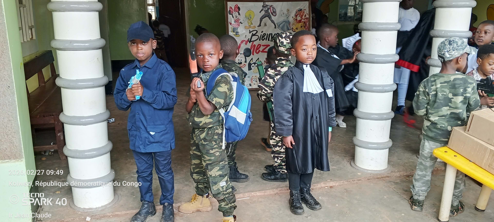
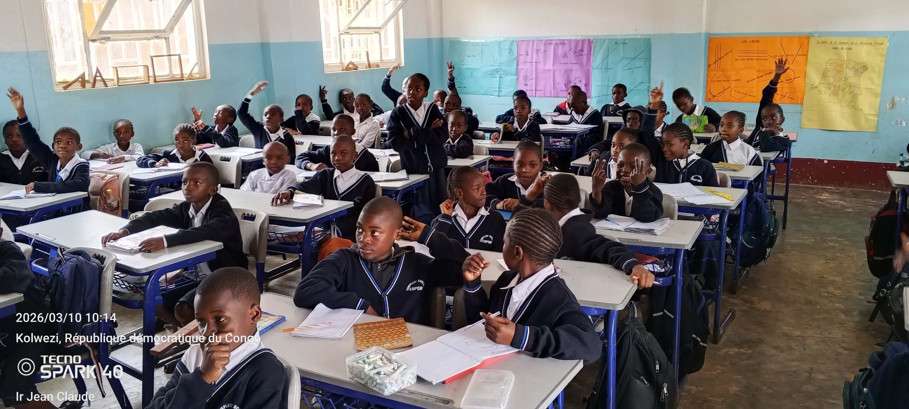
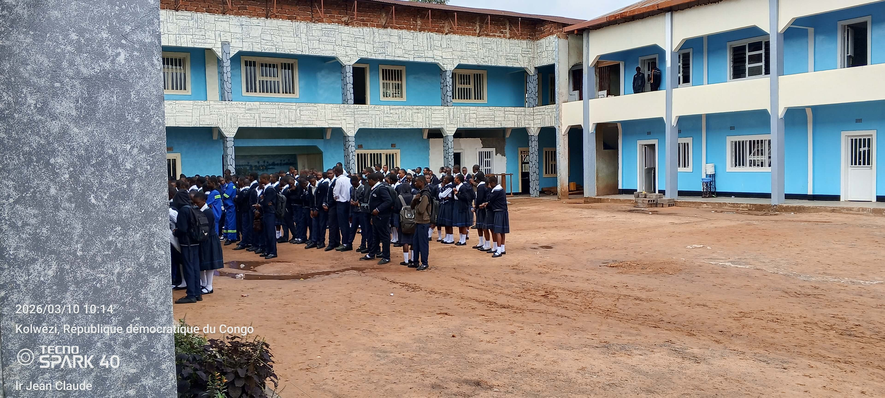

Maternelle
La section maternelle accueille les enfants dès 3 ans dans un cadre stimulant et sécurisant. Nous favorisons l’éveil intellectuel et social à travers des activités ludiques et éducatives adaptées à leur âge.

Primaire
La section primaire accompagne les élèves de 1ère à 6ème année en consolidant les connaissances fondamentales en lecture, écriture, mathématiques, sciences et culture générale. Nous préparons les élèves à devenir autonomes et curieux dans leur apprentissage.

Secondaire
La section secondaire prépare les élèves aux examens nationaux, en développant les compétences scientifiques, littéraires et professionnelles nécessaires à leur réussite future. Les élèves du sécondaire peuvent choisir parmi plusieurs options en fonction de leurs intérêts et projets professionnels :

7e et 8e Education de Base
Programme général pour consolider les bases et préparer les élèves aux choix d’options professionnelles.
Pédagogie Générale
Destinée aux futurs enseignants, cette option développe les compétences pédagogiques et la communication pour encadrer efficacement les élèves.
Scientifique
Orientation scientifique approfondie pour les élèves passionnés par les mathématiques, les sciences et la technologie.
Coupe et couture
Formation pratique pour maîtriser la couture et la création textile, idéale pour les métiers de la mode et de l’artisanat.
Electricité
Apprentissage des bases et techniques avancées en électricité et maintenance électrique industrielle et domestique.
Electronique
Approfondissement des systèmes électroniques, circuits, et appareils pour former des techniciens compétents.
Mécanique Générale
Formation pratique pour travailler sur des machines et installations industrielles, en acquérant des compétences polyvalentes.
Mécanique Auto
Option spécialisée dans l’entretien et la réparation des véhicules automobiles pour préparer aux métiers de l’automobile.
Commerciale et Gestion
Prépare les élèves aux métiers du commerce, de la gestion et de la comptabilité avec des connaissances pratiques et théoriques.
Construction
Formation pratique dans le bâtiment et la construction, incluant la lecture de plans et l’apprentissage des techniques de construction.
Activités complémentaires
En plus des cours, nous proposons des activités parascolaires : sports, arts, musique, clubs scientifiques et technologiques, afin de développer les talents et la créativité de chaque élève.